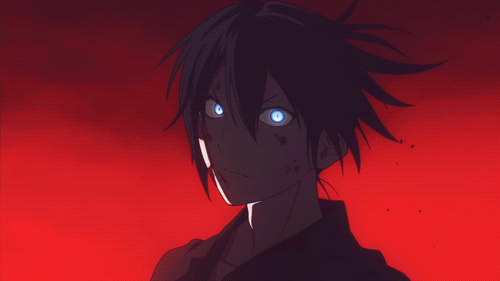
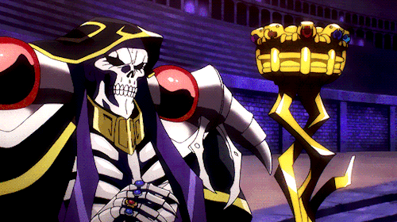

Black Clover
A história acompanha os dois garotos que competem entre si para se tornar o Rei Mago, o cavaleiro mágico mais forte do reino de Clover. Mesmo sem magia, Asta tenta ser um cavaleiro mágico, assim sua jornada começa quando obtém o misterioso poder "antimagia", que pode anular qualquer magia na obra.
Assistir 1º temporada (Dublado - 1 ao 153)
ou
Assistir 1º temporada (Legendado - 1 ao 170)

Gate Jieitai Kanochi Nite Kaku Tatakaeri
A história gira em torno de Itami Youji, um otaku de 33 anos que acaba se tornando membro das Forças de Autodefesa do Japão após um imenso portal para outro mundo se abrir em Ginza, Tóquio. Itami, graças à sua experiência com jogos e coisas do tipo, acaba ajudando o exército durante a batalha.

Mairishima Iruma kun
Conta a história de Iruma Suzuki, um garoto de 14 anos de bom coração, que foi vendido ao demônio por seus pais irresponsáveis. No entanto, o demônio ao qual ele é vendido não tem neto, então ele adora Iruma e o envia para a escola demoníaca.
Mushoku Tensei Isekai Ittara Honki Dasu
Conta a história de um homem de 34 anos, desempregado e sem perspectivas, que foi atropelado por um caminhão e reencarna no corpo de um bebê, em um mundo fantástico cheio de feitiçarias. Com o passar do tempo, ele desenvolve grandes habilidades mágicas.
Assistir 1º temporada (2 parte)

Noragami
Conta a história de Yato, um deus menor, cujo sonho é ter um santuário e muitos seguidores para adorá-lo. Entretanto, ele é um deus quase desconhecido, e sua única parceira que o ajudava a realizar os desejos dos humanos decide deixá-lo e passa a ajudar outro deus.
Overlord
Yggdrasil é um popular jogo online que, de repente, tem seus servidores desligados. A história conta sobre um jovem jogador, Momonga, que decide não sair do jogo e é transformado num esqueleto, o Overlord. Como não tem família, amigos ou lugar na sociedade real, o jovem Momonga decide lutar para dominar o novo mundo que o jogo se tornou.
Rakudai Kishi No Cavalry
A história é ambientada em um mundo de fantasia onde o cavaleiro fracassado Ikki Kurogane [ Kurogane Ikki ] conhece Stella Vermillion, que é considerado um gênio em batalha. Ambos compensam fraquezas uns dos outro e formam um relacionamento ao iniciar um treinamento conjunto para se tornarem grandes cavaleiros mágicos.

Re:Zero Kara Hajimeru Isekai Seikatsu
Conta a história de Subaru Natsuki, um NEET que não faz nada além de jogar. Quando ele e “Satella” são mortos misteriosamente, Subaru acorda e descobre que adquiriu uma habilidade que chama de “Retorno pela Morte”, permitindo-lhe reverter o tempo morrendo.
Assistir 2º temporada (2 parte)

Tsuki Ga Michibiku Isekai Douchuu
A história gira em torno de Makoto Misumi, um garoto normal do ensino médio convocado para um mundo alternativo como um bravo guerreiro. Infelizmente, a deusa do mundo disse com desdém: “Seu rosto é feio”, despojou-o de seu título e o baniu para as periferias do deserto…

Youjo Senki
A história acompanha um homem que é reencarnado em outro mundo como uma garota, depois de deixar um "Deus" nervoso com ele. Nesse mundo ele continua sua filosofia meticulosa e racional que o levou ao sucesso em seu mundo anterior.